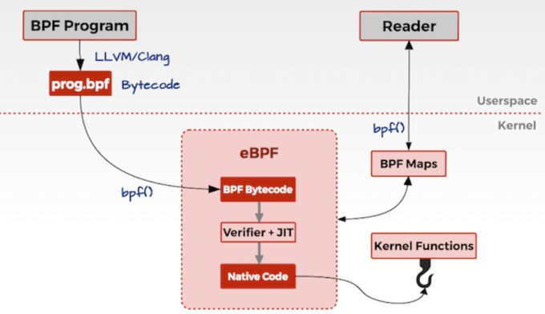
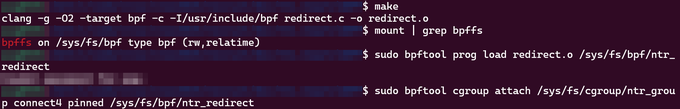
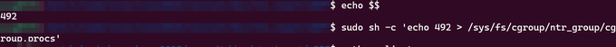
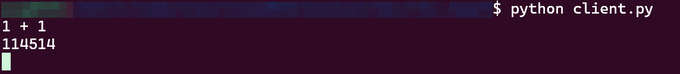
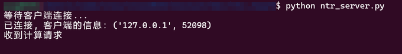
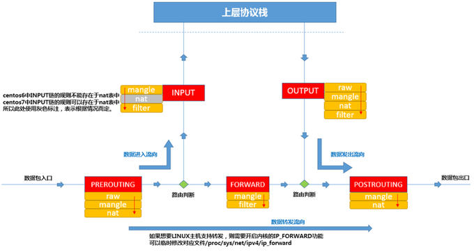
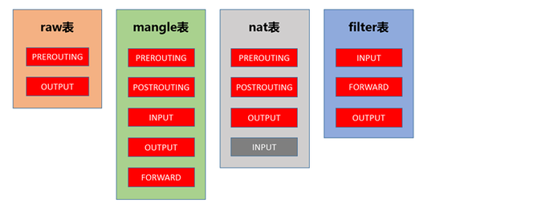
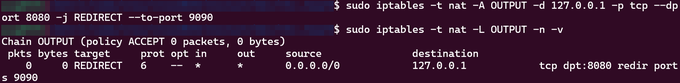
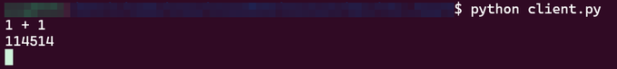
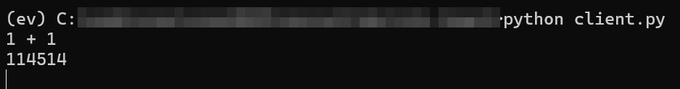

改写 connect 目标地址的方案：eBPF、iptables 和 WinDivert
背景
最近研究了一下 改写 connect 目标地址 的几种技术，在这里记录一下
Socket 是网络编程里进程间通信的媒介，程序靠它在不同主机（这里是本机两个端口）之间收发数据
客户端 明明 connect 到 127.0.0.1:8080，我想让它在不知情的情况下打到另一个服务，真服务端仍在 8080 做一些服务，假服务端 听 9090 端口，算完之后返回一些 fake 的结果
假服务端骨架：
这里拿客户端输入 1+1，正常服务端返回 2，虚假服务端返回 114514
socket_server.bind(("localhost", 9090))
# recv "1+1" -> send "114514"
然后我大概搜了一下，Linux 上的方案有 eBPF + cgroup 和 iptables NAT，Windows 上的方案有 WinDivert
eBPF + cgroup
简述
-
eBPF（extended Berkeley Packet Filter） ：
-
在内核里提供一台 沙箱虚拟机，用户程序编译成字节码后加载进去跑，不用改内核源码，也不用自己写内核模块
-
程序加载前 要经过 验证器，跑在 内核空间，免去频繁进出用户态
-
架构：

-
过程大概是，用户态 先编写 eBPF 代码，然后用 LLVM / Clang 编译成 eBPF 字节码，再调用
bpf()系统调用把 eBPF 字节码 放入 内核态 中的 eBPF 虚拟机，然后 内核态 用 Verifier 进行验证，再用 JIT 把 eBPF 字节码 编译成 本地机器码，最后 根据 eBPF 的功能，挂载到对应 执行路径 上，然后当 内核 运行到对应的 执行路径 后，执行这些 eBPF 代码 -
注意这里改的不是已经发出去的 IP / TCP 头。
connect(fd, addr)进内核时，eBPF 先改addr里的端口，SYN 还没组。后面协议栈按新地址发包，包头从一开始就是 9090
-
-
cgroup：
- 全称 Control Groups，内核提供的 物理资源隔离，可以限制、隔离、统计一组进程的 CPU / 内存
- 这里拿它当 hook 范围：只有 进 cgroup 组的进程 才会被改地址
- 具体的 cgroup 还包括 task，cgroup，subsystem，hierarchy，不过这里也用不到，不展开
-
hook 点：
- 是执行路径上 允许插入自定义代码 的位置
- 本方案挂的是
BPF_CGROUP_INET4_CONNECT，也就是 cgroup 里进程调用connect()（IPv4）时触发，程序类型是BPF_PROG_TYPE_CGROUP_SOCK_ADDR。 - 时机是：
connect(fd, addr, len)进内核sys_connect之后、TCP 三次握手之前。eBPF 改完ctx里的地址，内核再用 新地址 去握手。所以这是 连接前的重定向，发生在 Socket 层，代码本身跑在内核空间。
实现
SEC("cgroup/connect4")
int bpf_redirect_connect(struct bpf_sock_addr *ctx) {
if (ctx->user_family != AF_INET) {
return 1;
}
if (ctx->user_ip4 == bpf_htonl(INADDR_LOOPBACK)
&& ctx->user_port == bpf_htons(8080)) {
ctx->user_port = bpf_htons(9090);
char msg[] = "Hijacked 8080 -> 9090\n";
bpf_trace_printk(msg, sizeof(msg));
}
return 1;
}
返回 1 是允许连接
日志用 sudo cat /sys/kernel/debug/tracing/trace_pipe 查看
加载顺序：
sudo mkdir /sys/fs/cgroup/ntr_group
clang -g -O2 -target bpf -c redirect.c -o redirect.o
sudo mount -t bpf bpffs /sys/fs/bpf # 没有 bpffs 时
sudo bpftool prog load redirect.o /sys/fs/bpf/ntr_redirect
sudo bpftool cgroup attach /sys/fs/cgroup/ntr_group connect4 \
pinned /sys/fs/bpf/ntr_redirect
bpftool prog load 把 程序 pin 在 bpffs 上，工具进程退出也不会掉
然后再 attach 到 cgroup 的 connect4。
跑客户端的那个 shell 要进组，否则 hook 碰不到它：
echo $$
sudo sh -c 'echo <PID> > /sys/fs/cgroup/ntr_group/cgroup.procs'
python client.py
依赖大致是 clang、llvm、libbpf-dev、linux-tools-$(uname -r)。


客户端源码里写的还是 8080，连上之后算式结果变成 114514，8080 那个真服务端收不到连接，9090 收到了。trace 里会出现 Hijacked 8080 -> 9090。


iptables NAT
简述
iptables 是 包过滤的管理工具，简单来讲就是 Linux 的 防火墙，真正干活的是内核 Netfilter
表 提供特定功能，内置四张：filter、nat、mangle、raw，分别做 包过滤、地址转换、改包字段、决定要不要走连接跟踪
链 是数据包走的检查清单。包到一条链上，从第一条规则开始对，中了就按规则处理，没中就继续，全没中就走这条链的默认策略
五链 是包在网卡进、出、转发时经过的位置：
- PREROUTING： 包刚进网卡、做路由判断之前。DNAT 常挂这里
- INPUT： 目的地是本机，送进本地进程之前
- FORWARD： 不是本地产生、目的也不是本地，本机只负责转发
- OUTPUT： 本机自己发出去的包。这次改 127.0.0.1:8080 就走这里
- POSTROUTING： 包马上要离开。SNAT 常挂这里

四表：

- filter： 过滤，决定放行还是丢掉（
DROP/ACCEPT/REJECT/LOG）。内核模块是iptable_filter，链有INPUT/FORWARD/OUTPUT - nat： 改 IP、端口（
SNAT/DNAT/MASQUERADE/REDIRECT）。一个流只过这张表一次，第一个包允许做 NAT，后面的包自动跟。内核模块是iptable_nat，链有PREROUTING/OUTPUT/POSTROUTING - mangle： 改
TOS/TTL/ Mark，做 QoS 或策略路由。五条链都有。不要在这张表里做过滤或 NAT - raw： 决定要不要做连接跟踪，匹配时优先于其他表。链有
OUTPUT/PREROUTING
本机发出去的 TCP 会经过 nat 表的 OUTPUT 链。这次用 REDIRECT 把目的端口拧到另一处
这条重定向发生在 传输层 和 网络层 之间，组件是 Netfilter 的 OUTPUT 链，跑在 内核空间
只改地址，不管载荷
实现
sudo modprobe iptable_nat
sudo modprobe xt_REDIRECT
sudo iptables -t nat -A OUTPUT -d 127.0.0.1 -p tcp --dport 8080 -j REDIRECT --to-port 9090
sudo iptables -t nat -L OUTPUT -n -v
先起 8080 和 9090 两个服务端，再下规则，最后跑客户端。


WinDivert
简述
WinDivert 是 用户态抓包 / 改包 的驱动，不必自己写内核代码
Python 里用 PyDivert
驱动插在 网络层 和 数据链路层 之间，相当于一个 hook
包经过时改 DstPort，回程再把 SrcPort 改回去，客户端才认得出这是自己连的 8080
底层还会碰到 Windows 网络栈和 WFP
实现
redirect.py：
filter_rule = (
"(tcp.DstPort == 8080 and ip.DstAddr == 127.0.0.1)"
" or "
"(tcp.SrcPort == 9090 and ip.SrcAddr == 127.0.0.1 and tcp.PayloadLength > 0)"
)
with pydivert.WinDivert(filter_rule) as w:
for packet in w:
if packet.dst_port == 8080:
packet.dst_port = 9090
if packet.src_port == 9090:
packet.src_port = 8080
w.send(packet, recalculate_checksum=True)
三个进程一起跑：真服务端、假服务端、redirect.py。客户端仍然连 8080，实际回话来自 9090。


说些什么吧！